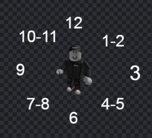

O'Clock System
The clock method is a simple and effective way to communicate directions and positions without relying on complex navigational terms. It uses the analogy of a clock face to indicate different directions, with the person as the center point. Here's a breakdown:
- 12 o'clock: Straight ahead, the direction the person is facing.
- 3 o'clock: To the right side of the person.
- 9 o'clock: To the left side of the person.
- 6 o'clock: Directly behind the person.

Using these clock references, individuals can quickly convey directions or the position of objects, targets, or threats in relation to themselves or someone else. It's a clear and universally understood way to indicate orientation and direction in various situations, particularly in fields like the military or emergency response where quick and precise communication is essential.